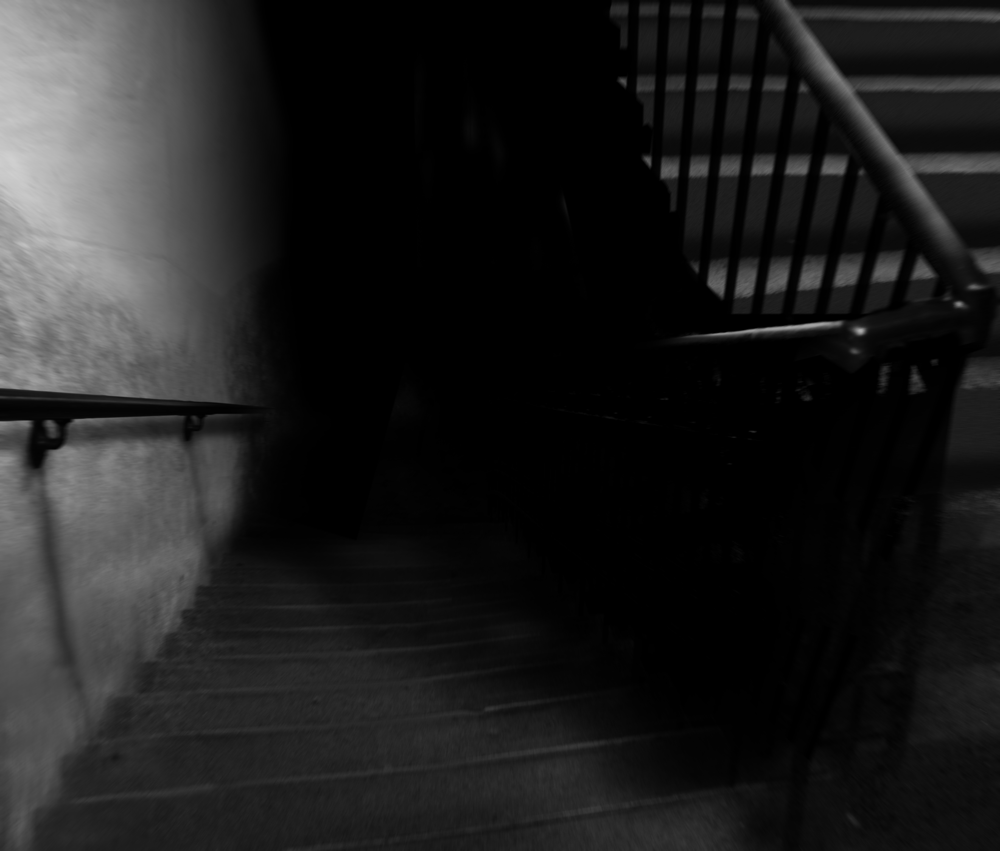

Figure A: Still frame taken from video footage of Exploration I
Item #: SCP-087
Object Class: Euclid
Special Containment Procedures: SCP-087 is located on the campus of [REDACTED]. The doorway leading to SCP-087 is constructed of reinforced steel with an electro-release lock mechanism. It has been disguised to resemble a janitorial closet consistent with the design of the building. The lock mechanism on the doorknob will not release unless ██ volts are applied in conjunction with counter-clockwise rotation of the key. The inside of the door is lined with 6 centimeters of industrial foam padding.
Due to the results of the final exploration (see Document 087-IV), no personnel are permitted access to SCP-087.
Description: SCP-087 is an unlit platform staircase. Stairs descend on a 38 degree angle for 13 steps before reaching a semicircular platform of approximately 3 meters in diameter. Descent direction rotates 180 degrees at each platform. The design of SCP-087 limits subjects to a visual range of approximately 1.5 flights. A light source is required for any subjects exploring SCP-087, as there are no lighting fixtures or windows present. Lighting sources brighter than 75 watts have shown to be ineffective, as SCP-087 seems to absorb excess light.
Subjects report and audio recordings confirm the distressed vocalizations from what is presumed to be a child between the ages of █ and ██. The source of the distress calls is estimated to be located approximately 200 meters below the initial platform. However, any attempts to descend the staircase have failed to bring subjects closer to the source. The depth of descent calculated from Exploration IV, the longest exploration, is shown to be far beyond both the possible structure of both the building and geological surroundings. At this time, it is unknown if SCP-087 has an endpoint.
Figure B: SCP-087-1; Enhanced image from still taken from Exploration I.
SCP-087 has undergone four video recorded explorations by Class-D personnel. Each subject conducting an exploration has encountered SCP-087-1, which appears as a face with no visible pupils, nostrils, or mouth. The nature of SCP-087-1 is entirely unclear, but it has been determined that it is not the source of the pleading. Subjects exhibit feelings of intense paranoia and fear when faced with SCP-087-1, but it is undetermined whether said feelings are abnormal or simply natural reactions.
Addendum:
Over a period of 2 weeks following Exploration IV, several members of the staff and students from the [REDACTED] campus reported knocking at a variable rate of 1-2 seconds per knock coming from the interior of SCP-087. The door leading to SCP-087 has been fitted with 6 centimeter thick industrial padding. All reports of knocking have ceased.
Authorized personnel may refer to documents 087-I through 087-IV for transcripts of Explorations I - IV.
Document 087-I
Document 087-II
Document 087-III
[DATA EXPUNGED]